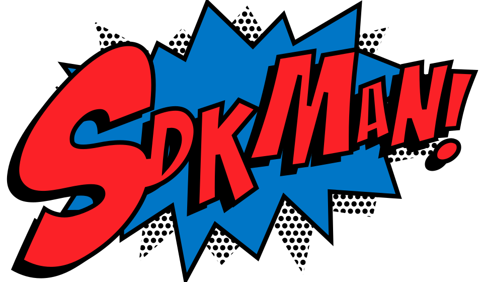

La plate-forme Java a été développé par:
James Gosling dans les années 1990,
pour Sun Microsystems
(OpenOffice, VirtualBox, Solaris, NFS, etc.).
Application Programming Interfaces:
Interfaces des Bibliothèques
Standard Edition (Java SE)
(bases, interfaces graphiques, …),
Enterprise Edition (Java EE)
(serveurs, …),
Micro Edition (Java ME)
(embarqué, mobile, …).
En 2010, Oracle Corporation rachète Sun Microsystems:
Oracle est une entreprise “profit-driven” …
Oracle Will Charge for Java Starting in 2019
“Oracle has announced that, effective January 2019, Java SE 8 public updates will no longer be available for ‘Business, Commercial or Production use’ without a commercial license.”
Short Version:
You can still get the Oracle OpenJDK builds and OpenJDK by other providers for free under an open source license, and the Oracle JDK remains free in some circumstances.
Using Java 11 In Production:
Important Things To Know
“If you stay up to date on news from the Java community, you may have heard that Oracle have changed their support model for Java.
Some news is even suggesting that we now have to pay to use Java – this is not true!”
Cycle de releases de 6 mois:
Java 14 publié en mars 2020,
Java 15 publié en septembre 2020,
Java 16 publié en mars 2021,
…
Java 21 prévu en septembre 2023.
https://openjdk.org/projects/jdk/21/:
2023/06/08. Rampdown Phase One (fork from main line)
2023/07/20. Rampdown Phase Two
2023/08/10. Initial Release Candidate
2023/08/24. Final Release Candidate
2023/09/19. General Availability
Java 8, (mars 2014) est une LTS : supporté jusqu’en 2030 !
Java 11 (sept. 2018) est une LTS, mais Java 8 représente encore 75% des usages en 2020.
Java 17 (sept 2021) est une LTS.
Java 21 (sept 2023) sera une LTS.
Projet de la fondation Eclipse (ex-AdoptOpenJDK)
“Prebuilt OpenJDK Binaries for Free!”

Installez votre SDK Java (ou Kotlin, Scala, Grovy, etc.):
$ sdk install java
Downloading: java 17.0.7-tem
In progress...
############################## 100.0%
Installing: java 17.0.7-tem
Done installing!De nombreux fournisseurs différents (Eclipse, Amazon, Azul, Microsoft, SAP, etc.)
Oubliez Java “Micro Edition” pour les mobiles …
Bienvenue à Android !
Android n’est pas basé sur la JVM (Java Virtual Machine, mais sur l’ART (Android Runtime, et avant sur la VM Dalvik) ; en particulier, le format de bytecode n’est pas compatible.
les bibliothèques standards Android ne sont pas compatibles avec les bibliothèques standards Java (ni Standard Edition, ni Mobile Edition).
A propos de l’usage de Java sur Android,
Google affirme que les APIs de Java (une partie de Java SE) ne sont pas soumises au copyright.
Historique sur 🔗 Wikipedia
en mai 2012 un premier jugement lui donne raison, mais …
en mai 2014, le niveau fédéral révoque partiellement cette décision mais …
en mai 2016, un nouveau jugement donne raison à Google mais …
The Case That Never Ends: Oracle Wins Latest Round vs. Google (mars 2018)
⚖ Appel auprès de la Cour Suprême des Etats-Unis,
😷 Contexte COVID-19 : repoussé à 2021.
⚖ Décision de la cour suprême le 5 avril 2021 :
favorable à Google (6-2),
mais question du droit d’auteur en suspens.
Nous sommes parvenus à la conclusion que dans ce cas, où Google a réutilisé une interface utilisateur en ne prenant que ce qui était nécessaire pour permettre aux utilisateurs de mettre à profit le cumul de leurs talents, la copie par Google de l’interface de programmation (API) Sun Java représente un usage légitime de ce contenu sur le plan du droit.
(doctrine du “fair use”)
Oracle doesn’t want Java EE any more
“Oracle wants someone else to lead enterprise Java, though it says it will stay involved.”
“Apache and Eclipse are likely candidates to take over Java EE.”
Sept. 2017: transfert des droits pour Java EE à la fondation Eclipse.
Java EE renamed ‘Jakarta EE’ after Big Red brand spat. “Oracle released the code, but not the name, so now devs have to make sure package names make sense”
“One important argument for allowing the libre version to keep the Java name was compatibility, but that didn’t sway Oracle. […] while javax package names and namespaces would remain for compatibility, new API technologies would need to adopt the new name.”
Oracle: Eclipse can’t use Java EE trademarks
“But Oracle ‘remains committed’ to working with the Jakarta EE working group and Jakarta EE specification process.”
It’s Java just, not as we know it: Oracle-Jakarta name talks fail
Pas de changement majeur :
Existence sous le nom Jakarta EE,
Gouvernance du projet par la fondation Eclipse.
Il existe des langages plus récents que Java,
tirant profit des problèmes constatés avec Java,
interopérables avec Java (bibliothèques, runtimes).
… et le langage Java lui-même évolue.
JEP 430: String Templates (Preview)
JEP 444: Virtual Threads
Threads “légers” (!= threads de l’OS).
Facilitent le développement d’applications concurrentes.
JEP 445: Unnamed Classes and Instance Main Methods (Preview)
Avant :
Après :
Types Record
Classes automatiquement dotées d’accesseurs, de constructeurs, de equals, hashCode et toString:
Pattern matching (instanceof)
Blocs de texte
switch comme expression
Quelques exemples :
Java 12 et 11. Nouvelles méthodes pour String :
repeat, isBlank, strip, lines, etc.
Java 10. Inférence de type (variables locales) :
Java 8. Expressions lambda
Enquête Stack Overflow 2020.
Langages les plus aimés : Rust, Typescript, Python, Kotlin, Go, Julia, …
Langages les plus craints : VBA, Objective-C, Perl, Assembly, C, PHP, Ruby, C++, Java, R, …
Java
Kotlin
Clojure
Scala
Evolution de Java plutôt que révolution,
Par JetBrains, l’entreprise derrière l’IDE IntelliJ IDEA,
Interopérable avec Java sur le desktop, le serveur (JVM) et Android,
Désormais langage préféré pour le développement Android (Google).
Un langage fonctionnel et un dialecte de Lisp :
à la fois fonctionnel et orienté objet,
conçu à École Polytechnique Fédérale de Lausanne (EPFL) (en Suisse), notamment par Martin Odersky,
language très (trop ?) riche :
currying, immutabilité, évaluation tardive, pattern matching, etc.
types algébriques, covariance et contravariance, types d’ordre supérieur, etc.